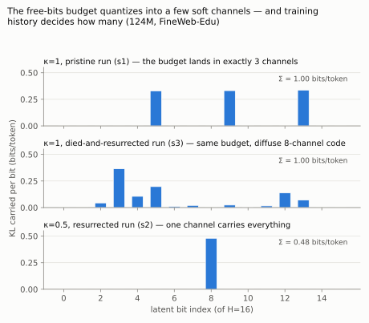

What the Free Transformer's latent actually learns, at 51M–124M parameters
The Free Transformer's motivating story (Fleuret, arXiv:2510.17558) is that a GPT should get to decide — commit to latent global properties of its output before emitting tokens. Paper 1 established what the mechanism costs at small scale and when its latent survives training. This paper asks the question that likelihood can't answer: the surviving latents carry up to a bit per token of learned information — information about what? Is it decisions, in any sense that persists across a sentence and steers a generation? Or something humbler?
We probe five live-latent checkpoints: the three most instructive at 124M — the pristine κ=1 run, its died-and-resurrected κ=1 sibling, and the resurrected κ=0.5 run — plus dev-scale (51M) checkpoints for replication of the pattern. Three instruments: per-bit information accounting (how much KL each of the 16 bits carries, and how persistent it is across positions), single-bit ablations (replace one bit with prior noise everywhere; measure the reconstruction damage), and a steering experiment (generate repeatedly from fixed prompts with the latent sequence pinned vs. resampled; if Z carries global decisions, generations sharing a Z should resemble one another more than generations with fresh Z — measured as word-3-gram overlap).

Single-bit ablations confirm the accounting is causal, not cosmetic: randomizing a live channel costs reconstruction almost exactly the KL it carried (e.g., the pristine κ=1 run's three channels ablate to +0.369, +0.372, and +0.380 nats; every dead bit ablates to 0.000 ± 0.005). Notably the ablation costs sum to slightly more than the joint KL — the channels are mildly synergistic, not redundant. And the latent width lesson from Paper 1 sharpens: H=16 was never the capacity; at these budgets the model manufactures exactly as many ~⅓-to-½-bit soft channels as κ affords and abandons the rest.
Paper 1 showed the κ=1 seed-3 run dying at iteration 1,000, recovering by 3,000, and paying a ~0.08-nat scar in its final loss. The probes reveal what the scar is made of: where its pristine sibling learned three crisp channels, the resurrected run spread the same 1.00 bits/token across eight partial channels (0.37 + 0.20 + 0.14 + 0.11 + 0.07 + three <0.05). Same objective, same data, same budget, same final KL — different code architecture, determined by whether training passed through a collapse. The resurrected κ=0.5 run, by contrast, rebuilt the same one-channel code that never-collapsed κ=0.5 runs learn — suggesting the diffuse code is a mark of recovering under a larger budget, though with n=1 per condition this is a case study, not a law.
Methodological corollary: two checkpoints of this architecture with identical training curves-at-a-glance can carry structurally different latent codes. Any interpretability claim about "the" Free Transformer latent needs to say which training history it examined.
Three independent measurements agree that, at this scale, the latent does not carry sentence-level decisions:
| Probe | Result (all live channels, all checkpoints) |
|---|---|
| Temporal persistence | P(bit unchanged at next token) = 0.49–0.78 → expected run lengths of 1–5 tokens. A decision spanning a 20-token sentence needs >0.95. |
| Surface correlates | |r| ≤ 0.03 against position, word boundaries, punctuation, alphabetic class — the channels encode nothing we can name from the outside. |
| Steering (fixed vs. fresh Z) | 3-gram overlap between generations sharing a pinned Z: 0.001–0.006; between different Z: 0.001–0.005. No consistent separation at any checkpoint, 124M or 51M. |
The steering null is worth stating plainly, because it is the experiment a practitioner would most want to work: we pinned the entire latent sequence — the model's full "decision" bandwidth — and generated repeatedly at temperature 0.8. The samples sharing a decision were no more alike in topic, style, or wording than samples with decisions drawn fresh. Qualitatively too: fixed-Z continuations of the same prompt wander to unrelated topics exactly as freely as resampled ones.
What positive account fits all three results? The one Paper 1's economics already implied: the encoder, which reads the full sequence, spends its budget transmitting per-token residual uncertainty — a soft side-channel that tells the decoder something about the very next token that context alone can't determine. That is why the information flickers at token timescale, matches no surface feature (it encodes what's left over after the context), buys reconstruction almost exactly its KL, and steers nothing when pinned: from the prior, it's just well-shaped noise.
FAIR's gains at 1.5B–8B are on prompted downstream tasks; ours is a 51M–124M likelihood-and- probes study. Both can be true: nothing here shows the latent can't become decision-like with scale — but our results make it a falsifiable question rather than a narrative. If the mechanism matures into decisions, three observables must move together as models grow: temporal persistence of live channels should rise toward sentence length, steering separation should become nonzero, and the recovery rate from Paper 1 should continue climbing. A 350M run measures all three; it's queued for the next weekend window on borrowed hardware. What this paper does establish: at the scales where most replications and ablations of new architectures actually happen, the Free Transformer's latent is a side-channel, and any small-scale study that assumes otherwise is measuring its own assumptions.
One script produces every number and example in this paper from a checkpoint:
.venv/bin/python scripts/probe_latent.py \
--ckpt runs/ft124m_free_k1_s1/best.pt --data-dir data/fineweb_edu \
--out runs/probe_k1_s1.json
Probe outputs for all five checkpoints ship in the repo (paper/probe_*.json),
alongside the code, configs, seeds,
and the live research log. Compute for this entire paper: about two GPU-hours on an
RTX 4080 SUPER.